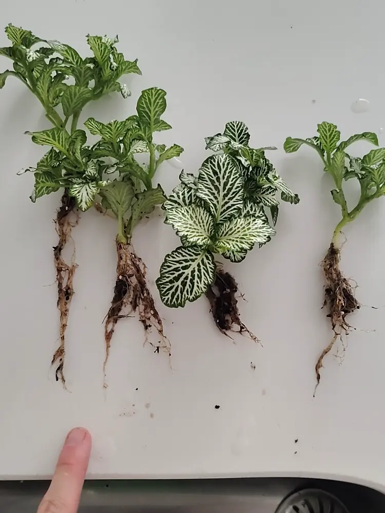
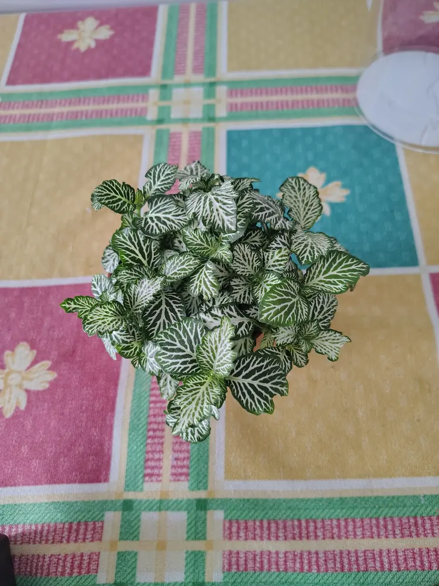
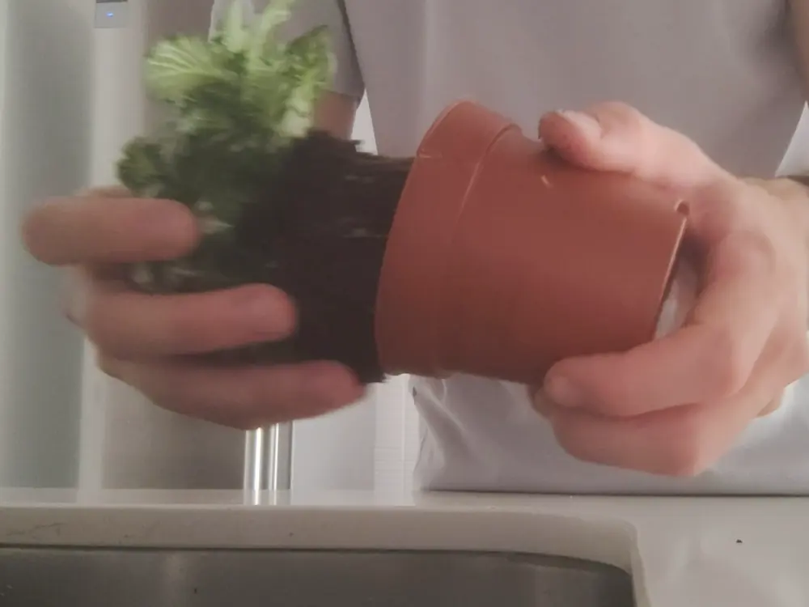
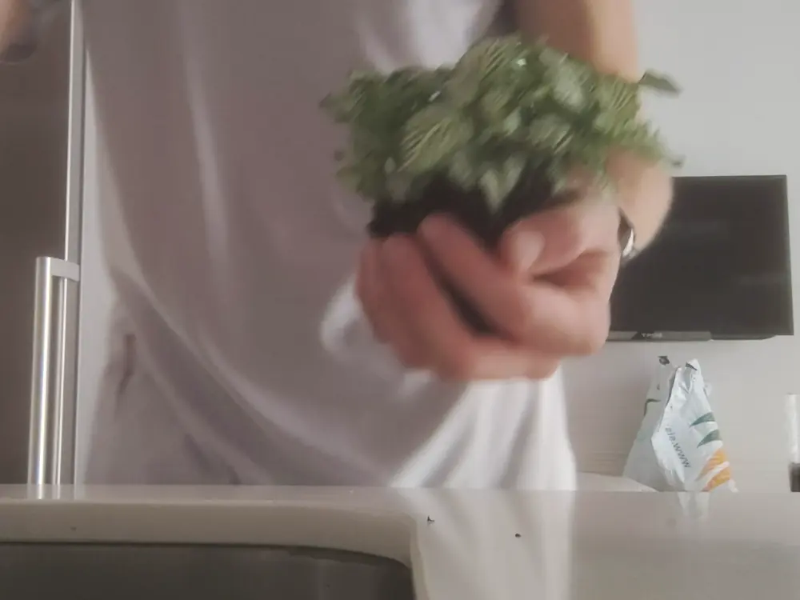
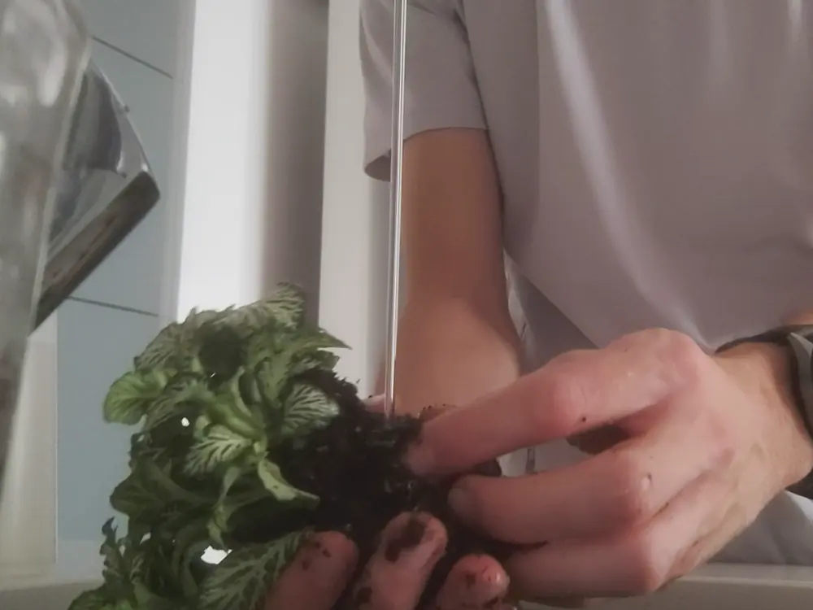
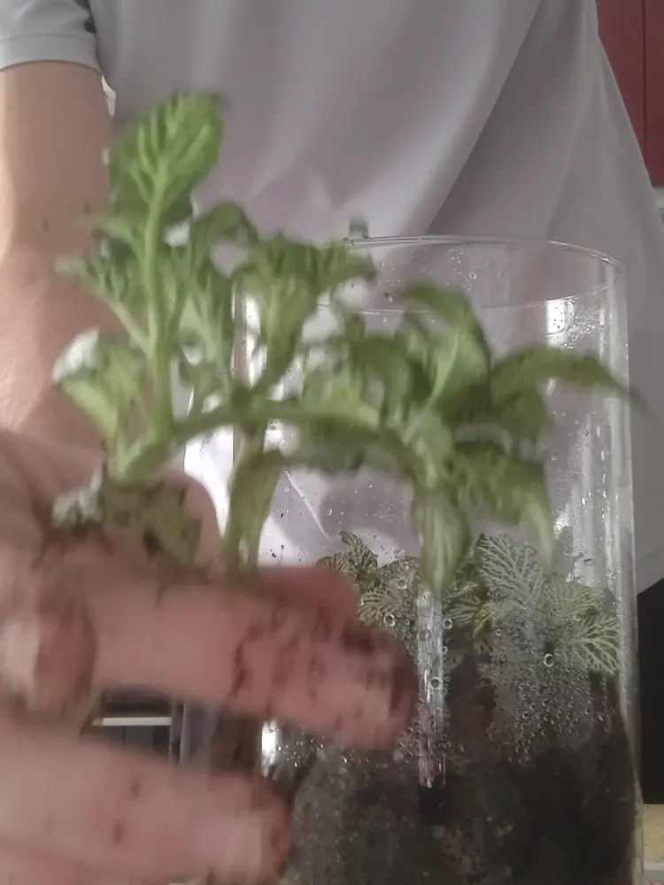
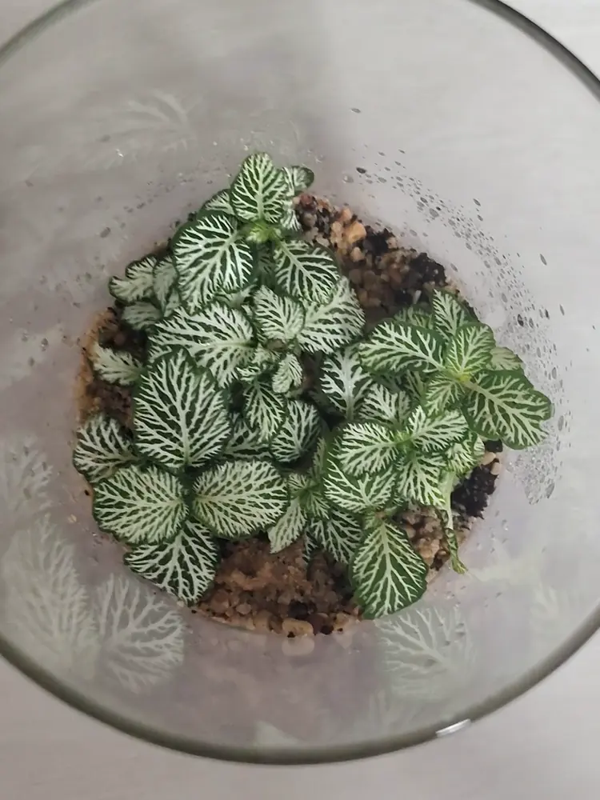
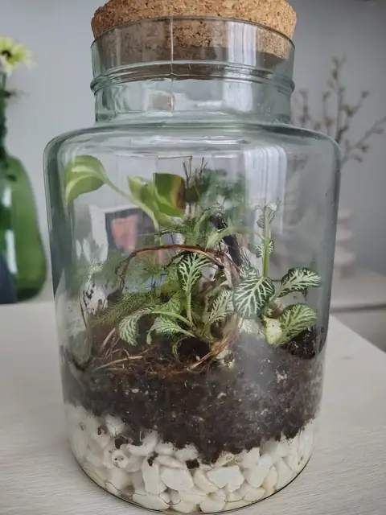

Cuando compras una Fittonia en un vivero, lo normal es pensar que te llevas una planta. Pero muchas veces en esa maceta hay varias plantas juntas, cada una con sus propias raíces. Si las separas, de una sola maceta te salen varias.
Yo lo hice con una Fittonia de nervios blancos que me costó unos 3 € en Viveros Silvosa, y me salieron cuatro plantas. Con ellas llené el terrario de tapa de bambú del que hablo en cuánto cuesta hacer un terrario cerrado.

Las cuatro plantas que salieron de una sola maceta de Fittonia.
1. Saca la planta de la maceta
Lo primero es sacar la Fittonia entera de su maceta, con todo el cepellón (el bloque de tierra y raíces). Mi truco: corto la maceta de plástico por la mitad con unas tijeras. Así la tierra sale mucho más fácil, porque si no, no hay manera de sacarla.

La Fittonia tal cual la compré. Parece una sola planta, pero no lo es.

Sacando la planta de la maceta con el cepellón entero.
La tierra vieja de la maceta yo normalmente la tiro. Para el terrario uso mi propia mezcla, así que no la necesito.
2. Lava bien las raíces
Con el cepellón en la mano, toca quitarle a las raíces toda la tierra. Yo las lavo bien con agua hasta que quedan limpias. Así ves claramente dónde acaba una planta y empieza la siguiente.

El cepellón recién sacado de la maceta, antes de lavarlo.
3. Separa las plantas con las manos
Con las raíces ya limpias, ve separando las distintas plantas con las manos, poco a poco y con cuidado de no romper las raíces. Siendo sinceros, alguna se rompe sí o sí. En mi caso, aun así salieron las cuatro adelante.

Separando las plantas con los dedos, sin prisa.
4. Plántalas
Ya tienes tus plantas separadas, listas para el terrario o para macetas nuevas. Yo planté las cuatro en el mismo tarro, haciendo un agujero con el dedo para cada una. Si es tu primera vez, en cómo montar tu primer terrario cerrado tienes el paso a paso completo, y con la calculadora de terrario puedes saber cuánta tierra y cuántas plantas caben en tu tarro.

Plantando las Fittonias una a una en el terrario.
5. Los primeros días
Los primeros días las plantas se ven un poco débiles. Es normal: es el estrés del trasplante. Si haces bien tres cosas, se recuperan solas en muy poco tiempo:
- Ánclalas bien: que cada planta quede bien fijada al suelo, pero sin compactar toda la tierra.
- No te pases con el riego: la tierra tiene que estar húmeda, no encharcada.
- Nada de sol directo: luz sí, pero nunca el sol dándoles de lleno.

Las cuatro Fittonias ya plantadas en su terrario.
Preguntas rápidas
¿Qué hago con la tierra vieja de la maceta? Yo la tiro. Para el terrario uso mi propia mezcla, que te explico en cómo hacer un sustrato que dure años.
¿Es grave si se rompe alguna raíz? En mi experiencia, no. Al separar las plantas alguna se rompe siempre, y aun así las cuatro salieron adelante.
¿Cuánto tardan en recuperarse? Muy poco. Los primeros días se ven algo flojas, pero bien ancladas, sin exceso de agua y sin sol directo, se recuperan solas.

¿Prefieres que te lo monte yo?
Hago terrarios cerrados por encargo en la Comunidad de Madrid, desde 25 €.
Ver cómo pedir el tuyo →